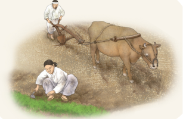

1번
다음 <보기>에서 알맞은 그림과 설명을 찾아 끌어 놓으세요.
① 궁궐에서 그림을 그리거나 외국 사신을 맞이하며 통역을 담당하기도 했다.
② 관리가 되거나 유교의 가르침이 담긴 책을 공부하고 지역의 선비들과 여러 가지 주제로 토론하기도 했다.
③ 나라와 개인의 재산으로 여겨져 양반의 집이나 관공서에서 허드렛일이나 물건을 만드는 일을 하기도 했다.
 ④ 대부분 농사를 지으며 나라에 큰 공사나 일이 있을 때 불려 가기도 했으며 나라에 세금을 내기도 했다.
양반
중인
상민
천민